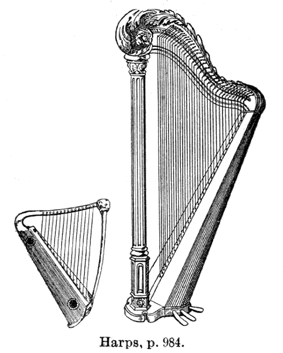
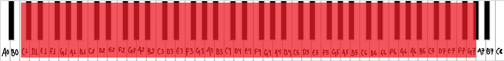
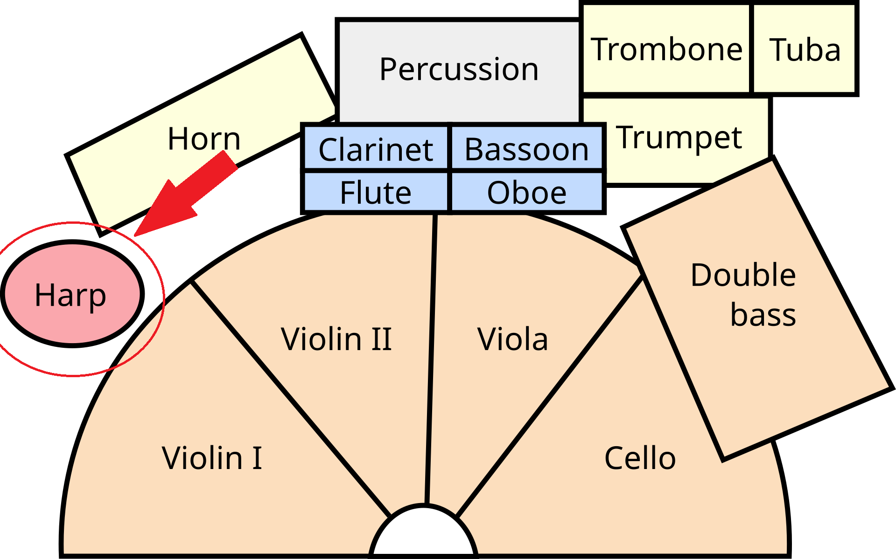
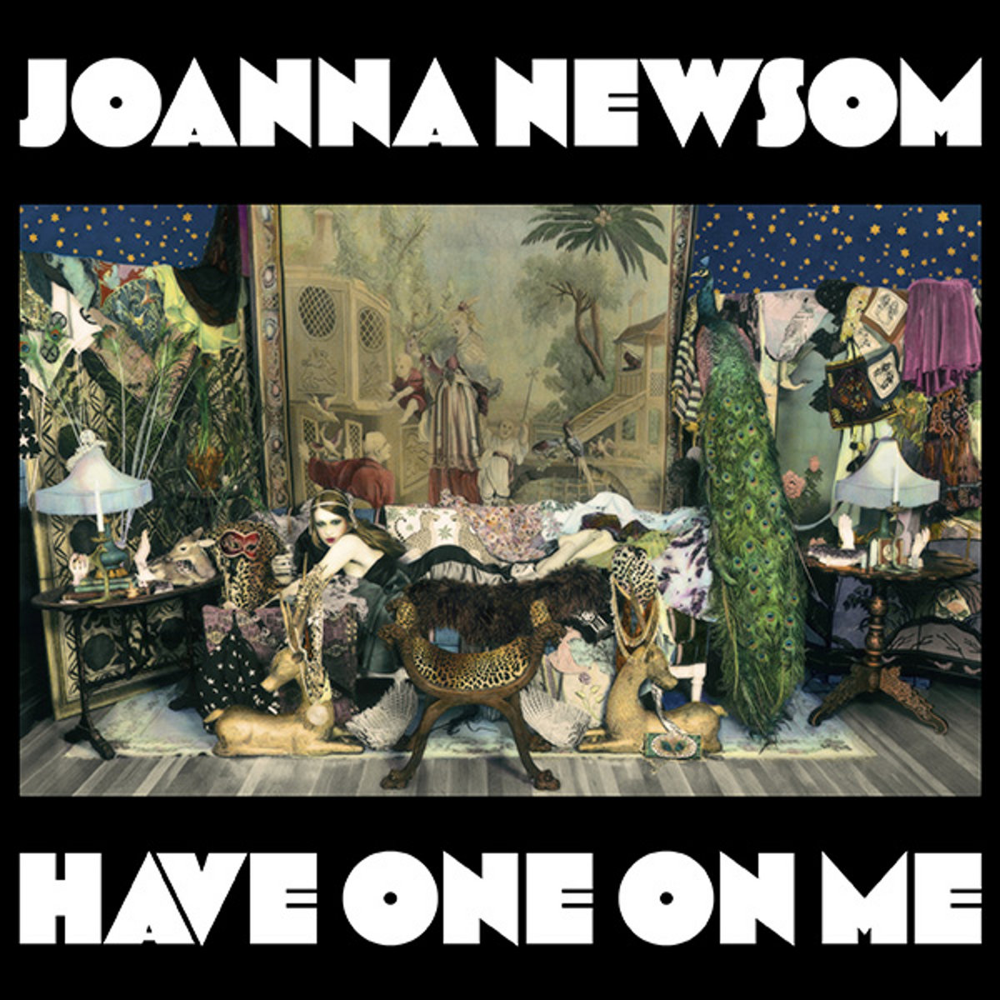
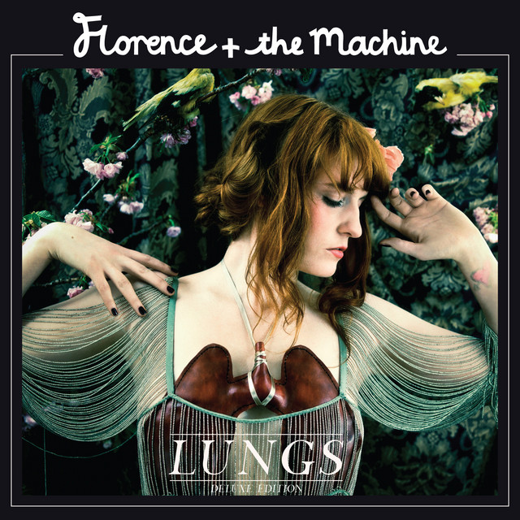
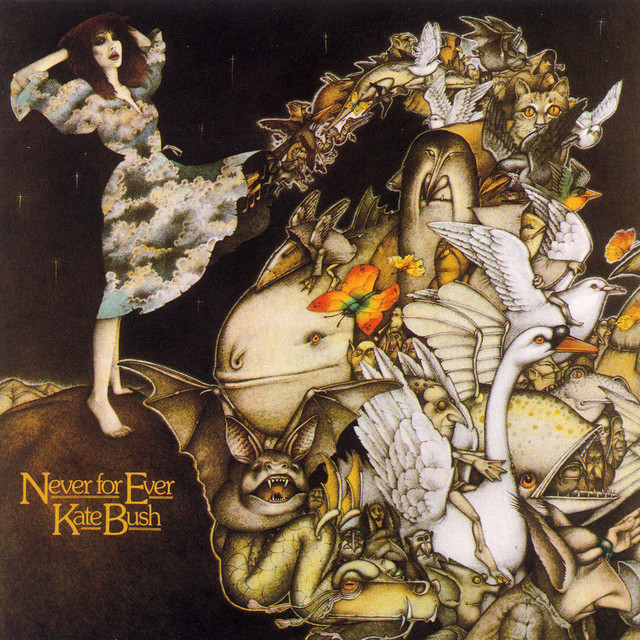
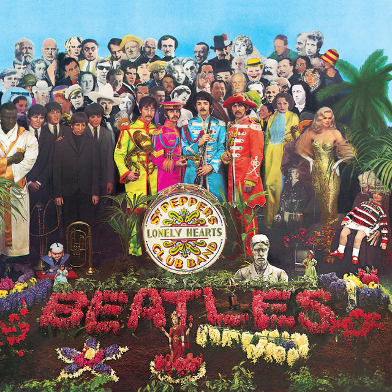

What is a harp?
The harp is a stringed instrument in which the resonator, or belly, is perpendicular, or nearly so, to the plane of the strings. Each string produces one note, the gradation of string length from short to long corresponding to that from high to low pitch. The resonator is usually of wood or skin. [1]

Musical range and clef
The range of the harp is from C1 to G7, and the ranges fall as the low register (At the bottom of the harp single notes or chords work well, but running notes just become a blur because this area is so resonant.), the central register (The central register resonates beautifully and arpeggios and short running notes as well as chords fit perfectly in this register.), and the high register (At the top of the harp short running notes are better than chords or long single notes because this area is much less resonant and the notes don’t ring.) [2]
Music for harp is usually written on a grand staff, similar to piano music. Most of the time, the top staff should be in treble clef, and the bottom staff in bass clef. [3]

Where is the harpist seated in an orchestra?
The harp is usually seated on the sides or near the back of the orchestra, often alongside the percussion or piano sections. [4]

Popular songs/pieces that feature the instrument:

Have One On Me

Dog Days Are Over

Army Dreamers

She's Leaving Home
References
- Brittanica, "Harp (Musical Instrument)".
- Philharmonia, "Harp: Range".
- Timbre and Orchestration, "Idiomatic Scoring for the Harp".
- Rockford Symphony Orchestra, "Are all orchestras arranged on stage the same way?".